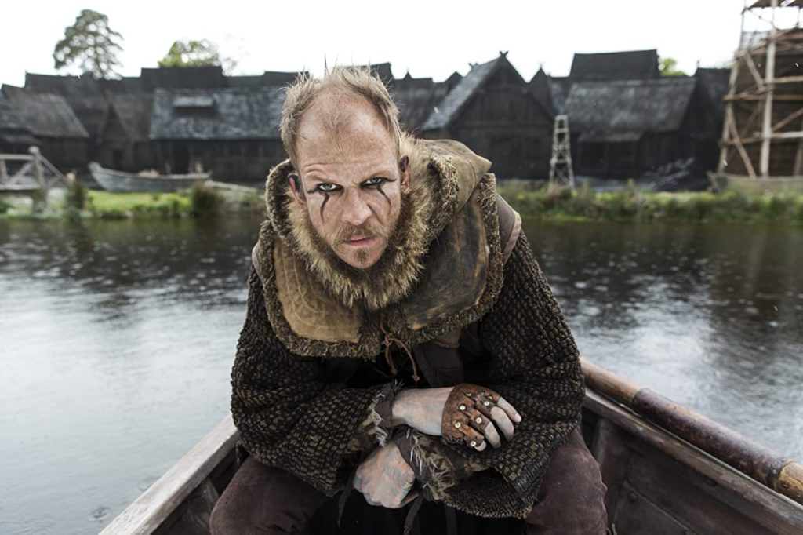
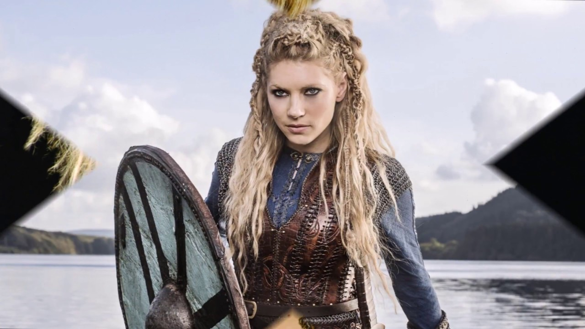
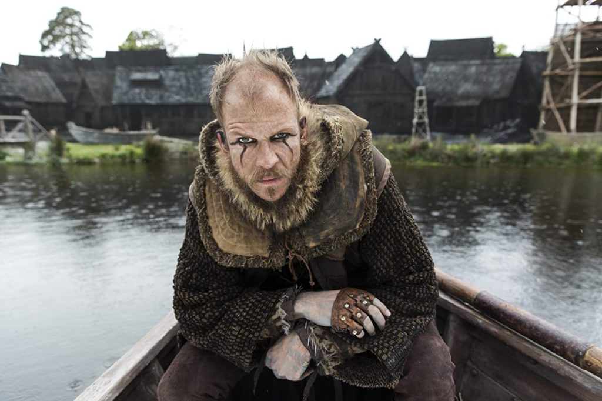
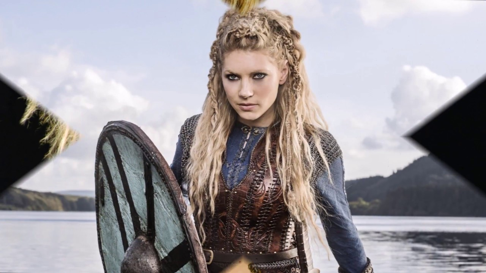

Рагнар
Рагна́р Лодбро́к (др.-сканд. Ragnarr Loðbrók) - полулегендарный скандинавский конунг из рода Инглингов, ключевой персонаж сериала.
Умелый воин и амбициозный вождь, Рагнар на протяжении почти всей своей жизни следует пути викинга. Рассекая море в поисках боевой славы и наживы, он стремится обрести новые знания, открыть неизвестные земли и изменить нелегкую судьбу своего народа, живущего в суровых условиях Скандинавского полуострова.
Флоки
Родившийся когда-то в IX веке, Флоки, а точнее, был носовым, который отплыл в Исландию и поселился там со своей семьей. По всей вероятности, он никогда не встречал Рагнара или других. Во всяком случае, его подвиги представлены в «Ландмамабуке» («Книга поселений») - генеалогической записи 12-го века, в которой подробно описывается имена около 400 первоначальных поселенцев и их потомков. Настоящий Флоки был не первым, кто добрался до Исландии; на самом деле он был третьим.
В 868 году он отправился из Западной Норвегии, взяв с собой трех воронов и, подобно Ною, использовал их, чтобы найти остров. Он и другие первоначальные поселенцы построили свой первый зимний лагерь в северо-западной части Исландии - регионе со многими горячими источниками и термальными бассейнами. Вероятно, из-за сходства названия, сериала Флоки часто ассоциируется с Локи, норвежским богом вреда.
Лагерта
Ее история, как и другие, считается в основном вымышленной. Жизнь Лагерты началась, когда Рагнар спас ее, после того, как шведский король вторгся и убил дедушку Рагнара и отправил женщин в свой двор в публичный дом для публичного унижения. Лагерта и другие женщины сражались вместе с ним, играя важную роль в победе Рагнара.
Он был впечатлен красотой и мужеством Лагерты в битве и вскоре женился на ней. Вместе они имели сына, Фридлейфа и двух дочерей, имена которых не были записаны. Позднее они развелись, и Рагнар женился на дочери шведского короля.
 


